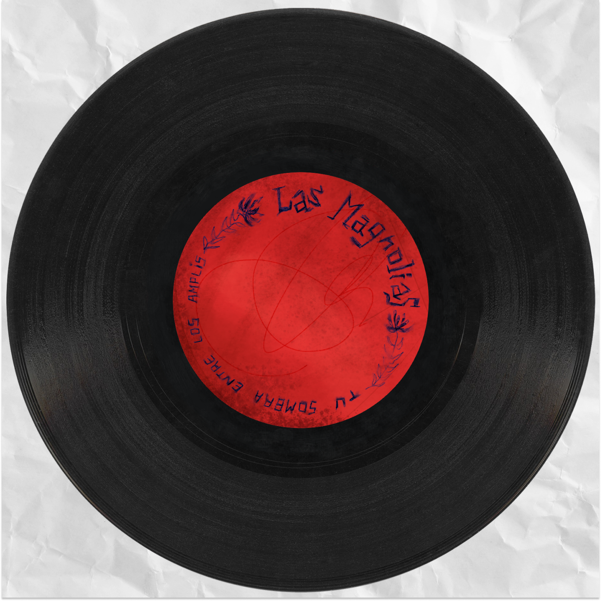

Ariadna Alicia Ruiz Castillo
Videogame Developer · Music Composer · Designer
Videogame Developer · Music Composer · Designer
I am a multidisciplinary game developer with hands-on experience across programming, music composition, narrative design, and visual art. I have collaborated in the development of seven published games in both academic and independent settings, including Global Game Jam and ComJamOn, where one of our projects was awarded Best Theme Implementation.
I compose original music for my projects using Reaper and MIDI production, and I approach every game as a complete creative experience — from mechanics to sound to story. I thrive in small, collaborative teams where wearing multiple hats is an asset, not an exception.
JavaScript · C# · C++ · Python · GDScript · R
Unity · Godot · Phaser · Unreal Engine 5
Pandas · SDL · OpenGL
Music Composition · Sound Design · SFX · Reaper · MIDI Production · Audacity
2D Illustration · Basic UI · Narrative Design · 2D & 3D Modeling · 2D & 3D Animation · Blender · Affinity · Procreate
Spanish (native) · English (C1 Cambridge Certificate)


A game developed in Godot for ComJamOn 2024. Awarded Best Theme Implementation.
View project

A game developed in Godot for Global Game Jam 2025. Composed original music for the game.
View project
A game developed in Phaser for the "Video Game Programming in Interpreted Languages" course. Composed original soundtrack and built the sound manager.
View project
A game developed in Godot for Global Game Jam 2026. Composed original music, recorded sound effects, and built the sound manager.
View project
A Guitar Hero-style game developed during a game jam. Composed the original song for the game. Project currently in development — music available on SoundCloud.
View song